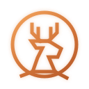

YusuallyExplorer · Creator · Lifelong Learner
Once I found joy in exploring maps. Now I explore different ways of living. Building things on the web, tracing travels, and documenting the journey.
· Featured Work
A Treemap data exploration platform that visualizes how the world is composed — GDP, population, trade, and more. Observe complex data through beautiful, interactive maps.
● Live shapeof.world/t/world-gdpA comprehensive research report on self-media operations across major Chinese platforms in 2025–2026. Deep analysis of content strategies, monetization, and platform algorithms.
● Research 自媒体运营全维度调研整合.htmlInteractive data visualization of US population growth and immigration origins (1820–2020). Explore migration patterns through D3.js maps, charts, and timeline animations.
● Live /us-immigration.html· About
I'm Yusually — someone still figuring out the world. It started with maps: the joy of tracing routes, discovering hidden paths, and understanding how places connect. That curiosity led me from geography to technology, from travel to self-media.
Now I explore different ways of living — through web projects, research, and creative tools. Every project is a new territory, every line of code a step into the unknown.
Got a project idea or just want to connect?